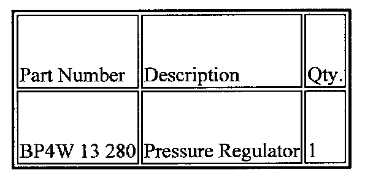
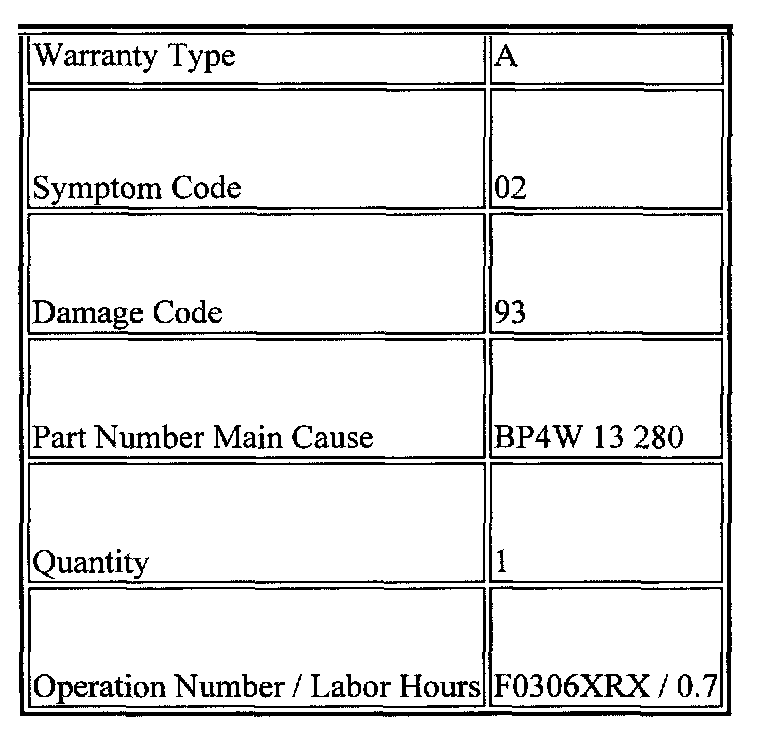

Fuel System - Excessive Engine Cranking Time
01-003/991999 Miata
ENGINE HARD TO START - EXCESSIVE CRANKING TIME
APPLICABLE MODELS
All 1999 Miatas with VINs lower than JM1NB35**X0122622.
DESCRIPTION
Hard starting or excessive cranking time may occur on some vehicles. This may be caused by foreign substances entering the fuel system during vehicle production. The substances may accumulate at the fuel pressure regulator valve causing it to stick open. Production and handling procedures have been changed to prevent this condition.
Customers complaining of this concern should have their vehicle repaired using the following procedure.
REPAIR PROCEDURE
1. Inspect the fuel hold pressure (five minutes afier turning the key to the "OFF" position). For detailed procedure, refer to the Workshop Manual, FUEL PUMP INSPECTION.
^ If the fuel hold pressure is less than 250 kPa (2.55 kgf/sq.cm, 36.3 psi), replace the pressure regulator with a modified part.
^ If the fuel hold pressure is more than 250 kPa (2.55 kgf/cm2, 36.3 psi), there is no problem in the fuel pressure regulator. Refer to the troubleshooting guide in the Workshop Manual.
2. Verify repair.

PARTS INFORMATION

This information applies to verified customer complaints on vehicles covered under normal warranty. Refer to the SRT microfiche for warranty term information.